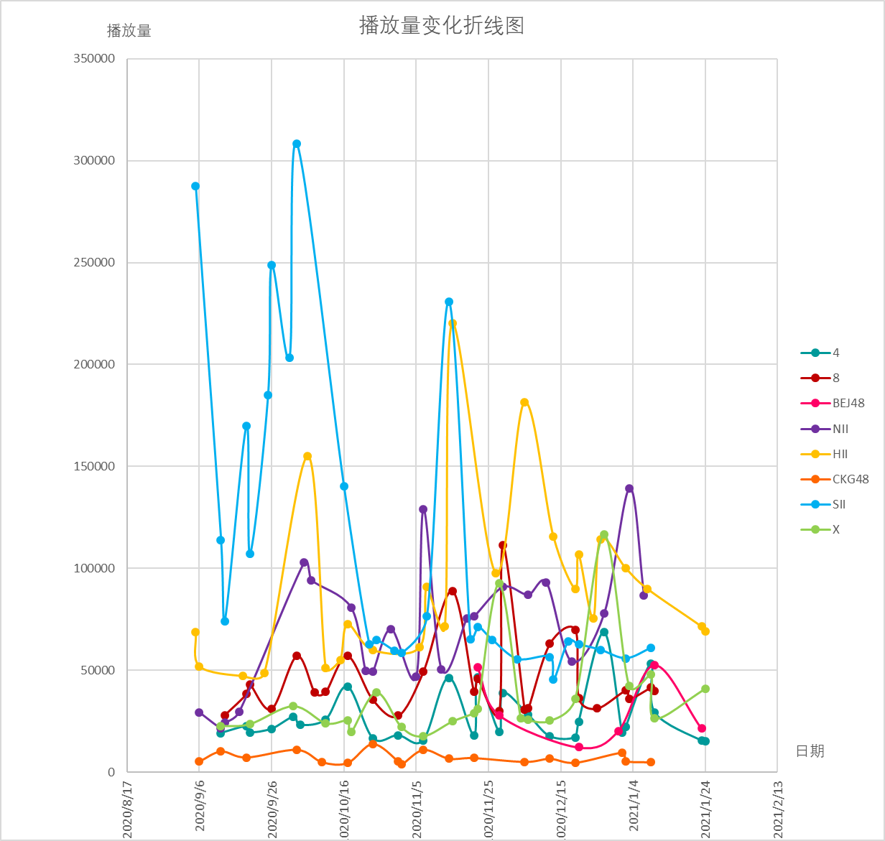

时段6：20200904-

由于嘉兴路各队的新成员首演时间各不相同，本时段以官宣悠唐倒闭作为分界点。
后选秀时期，老菜皮、cp、周年、mc是几个代表性的关键词。
10月之前的老菜皮流量在老菜皮粉、队推、秀粉的共同加持下，倍杀其他，无与伦比。此后新S虽然在社交媒体上的风评高开低走，一路flop，但是B站队推依然非常努力，播放量同比未见颓势。
包括但不限于hm、sqhy、nb、xl、dk在内的一众大势cp助力了n、h、八班的起飞，最高播放量大多数与她们相关。
除了恩以外的嘉兴路各队周年都反响不错，流量聚集。
没有新公演的一年，mc也成了关键，n、h、八班的mc也时有看点，让普通公演不再普通，而mc不行的S、X、四班很明显不够有吸引力。
重新出发的BEJ流量尚可，只要北京疫情尽量不反复，剧场党还在，八选进圈也不无可能。
特别提一下水诞，同期X队的最大流量，梦想汗水坚持不是一文不值。